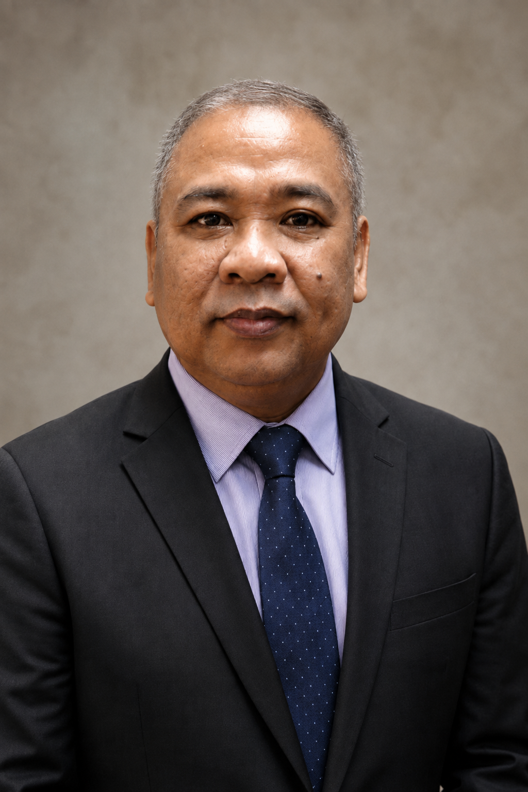

Scholarship & Research
Works in philosophy, theology, ethics, political theory, and public scholarship.
Learn More →A life devoted to scholarship, teaching,
ministry, creation care, and the common good.

Pastor-teacher, scholar of religion and philosophy, educator, researcher, and advocate for creation care and responsible public life.
I believe that faith seeks understanding, knowledge serves human life, and leadership must be formed by responsibility, service, and concern for the common good.
More About Me →Research in philosophy of religion, ethics, political thought, theology, and public life.
Transformative education in philosophy, theology, ethics, and humanities.
Pastoral care, spiritual formation, preaching, teaching, and community service.
Ecological stewardship, wildlife attention, conservation, and climate responsibility.
Formation for ethical public responsibility, institution-building, and the common good.
Works in philosophy, theology, ethics, political theory, and public scholarship.
Learn More →Courses in philosophy, theology, ethics, and humanities across multiple institutions.
Learn More →Pastoral ministry, spiritual care, formation, preaching, teaching, and local service.
Learn More →Ecological stewardship, conservation, wildlife photography, and care for our common home.
Learn More →Formation for ethical leadership, institution-building, justice, peace, and responsible service.
Learn More →